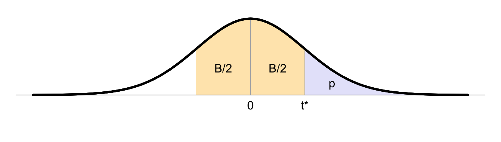

C Critical values for \(t\)-distribution

The critical boundary value \(t^*\) given below has a critical probability \(p\) under \(H_0\), i.e. \(P(t \geq t^*|H_0)=p\), and has probability \(B\) of a value between \((-t^*, +t^*)\). The \(t\)-distribution is symmetric around \(t=0\), thus \(P(t < -t^*) = P(t > t^*)\).
The table below provides the critical boundary values \(t^*\) for much used critical probabilities \(p\) and confidence intervals \(B\), for the degrees of freedom indicated in the first column.
| p | 0.2 | 0.1 | 0.05 | 0.025 | 0.01 | 0.005 | 0.0025 | 0.001 | |
|---|---|---|---|---|---|---|---|---|---|
| B | 60% | 80% | 90% | 95% | 98% | 99% | 99.5% | 99.8% | |
| 1 | 1.376 | 3.078 | 6.314 | 12.706 | 31.821 | 63.657 | 127.321 | 318.309 | |
| 2 | 1.061 | 1.886 | 2.920 | 4.303 | 6.965 | 9.925 | 14.089 | 22.327 | |
| 3 | 0.9785 | 1.638 | 2.353 | 3.182 | 4.541 | 5.841 | 7.453 | 10.215 | |
| 4 | 0.941 | 1.533 | 2.132 | 2.776 | 3.747 | 4.604 | 5.598 | 7.173 | |
| 5 | 0.9195 | 1.476 | 2.015 | 2.571 | 3.365 | 4.032 | 4.773 | 5.893 | |
| 6 | 0.9057 | 1.440 | 1.943 | 2.447 | 3.143 | 3.707 | 4.317 | 5.208 | |
| 7 | 0.896 | 1.415 | 1.895 | 2.365 | 2.998 | 3.499 | 4.029 | 4.785 | |
| 8 | 0.8889 | 1.397 | 1.860 | 2.306 | 2.896 | 3.355 | 3.833 | 4.501 | |
| 9 | 0.8834 | 1.383 | 1.833 | 2.262 | 2.821 | 3.250 | 3.690 | 4.297 | |
| 10 | 0.8791 | 1.372 | 1.812 | 2.228 | 2.764 | 3.169 | 3.581 | 4.144 | |
| 11 | 0.8755 | 1.363 | 1.796 | 2.201 | 2.718 | 3.106 | 3.497 | 4.025 | |
| 12 | 0.8726 | 1.356 | 1.782 | 2.179 | 2.681 | 3.055 | 3.428 | 3.930 | |
| 13 | 0.8702 | 1.350 | 1.771 | 2.160 | 2.650 | 3.012 | 3.372 | 3.852 | |
| 14 | 0.8681 | 1.345 | 1.761 | 2.145 | 2.624 | 2.977 | 3.326 | 3.787 | |
| 15 | 0.8662 | 1.341 | 1.753 | 2.131 | 2.602 | 2.947 | 3.286 | 3.733 | |
| 16 | 0.8647 | 1.337 | 1.746 | 2.120 | 2.583 | 2.921 | 3.252 | 3.686 | |
| 17 | 0.8633 | 1.333 | 1.740 | 2.110 | 2.567 | 2.898 | 3.222 | 3.646 | |
| 18 | 0.862 | 1.330 | 1.734 | 2.101 | 2.552 | 2.878 | 3.197 | 3.610 | |
| 19 | 0.861 | 1.328 | 1.729 | 2.093 | 2.539 | 2.861 | 3.174 | 3.579 | |
| 20 | 0.860 | 1.325 | 1.725 | 2.086 | 2.528 | 2.845 | 3.153 | 3.552 | |
| 21 | 0.8591 | 1.323 | 1.721 | 2.080 | 2.518 | 2.831 | 3.135 | 3.527 | |
| 22 | 0.8583 | 1.321 | 1.717 | 2.074 | 2.508 | 2.819 | 3.119 | 3.505 | |
| 23 | 0.8575 | 1.319 | 1.714 | 2.069 | 2.500 | 2.807 | 3.104 | 3.485 | |
| 24 | 0.8569 | 1.318 | 1.711 | 2.064 | 2.492 | 2.797 | 3.091 | 3.467 | |
| 25 | 0.8562 | 1.316 | 1.708 | 2.060 | 2.485 | 2.787 | 3.078 | 3.450 | |
| 30 | 0.8538 | 1.310 | 1.697 | 2.042 | 2.457 | 2.750 | 3.030 | 3.385 | |
| 40 | 0.8507 | 1.303 | 1.684 | 2.021 | 2.423 | 2.704 | 2.971 | 3.307 | |
| 50 | 0.8489 | 1.299 | 1.676 | 2.009 | 2.403 | 2.678 | 2.937 | 3.261 | |
| 100 | 0.8452 | 1.290 | 1.660 | 1.984 | 2.364 | 2.626 | 2.871 | 3.174 | |
| 200 | 0.8434 | 1.286 | 1.653 | 1.972 | 2.345 | 2.601 | 2.839 | 3.131 | |
| 400 | 0.8425 | 1.284 | 1.649 | 1.966 | 2.336 | 2.588 | 2.823 | 3.111 | |
| ∞ | 0.8416 | 1.282 | 1.645 | 1.960 | 2.326 | 2.576 | 2.807 | 3.090 |